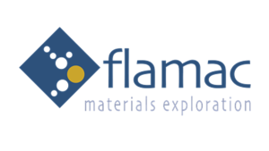

Flamac verjaart …
maar gedoemd ‘forever young’ te blijven

Van begin tot einde
Oprichting
Op deze dag is het exact 20 jaar geleden dat Flamac, kort voor Flanders Materials Centre vzw, opgericht werd.
Op 19 januari 2005 werd door vier stichtende leden (origineel waren het vijf trekkers) een nieuwe vereniging zonder winstoogmerk boven de doopvont gehouden. De statuten werden opgesteld en de doelen van de vereniging werden bepaald:
- Een onderzoeksinstelling te zijn rond state-of-the-art methodologie voor het versnellen en verruimen van materiaalonderzoek, kritisch voor de Vlaams industrie in het algemeen en voor de materiaalindustrie in het bijzonder. Hierbij zal de vereniging zich in eerste instantie toespitsen op pragmatisch moleculair modelleren en combinatorische methodologie. - Samenwerking te bewerkstelligen tussen (op de eerste plaats) Vlaamse bedrijven, universiteiten en onderzoekinstellingen en aldus
- Snellere en efficientere methodes voor materiaalonderzoek (in eerste instantie pragmatisch moleculair modelleren en combinatorische methodologie) te ontwikkelen/aan te wenden om materiaalontwikkeling en kennisverwerving te verruimen en te versnellen.
- De kennis en het gebruik van pragmatisch moleculair modelleren en combinatorische methodologie promoten en verspreiden.
- Finaal een excellent kenniscentrum voor Materiaalonderzoek worden en blijven
- Middelen ter beschikking stellen om studies en acties te financieren ter ondersteuning van de doelstellingen.
- Deelnemen in andere vzw’s, organisaties, instellingen of commerciele vennootschappen wanneer deze deelnemingen, rechtstreeks of onrechtstreeks, te maken hebben met haar maatschappelijk doel of de verwezenlijking daarvan kunnen bevorden of vergemakkelijken.
Voorwaar mooie doelstellingen.
Op 23 maart 2005 werden de statuten ter publicatie in het Staatsblad neergelegd, en was de organisatie met ondernemingsnummer 872.622.292 dan ook formeel bekend.
De Flamac laboratoria op het Technologiepark in Zwijnaarde werden officieel ingehuldigd op 10 februari 2006.

Later op het jaar werd ook de maatschappelijke zetel van Brussel naar Zwijnaarde overgebracht.
[Eerste analyse/fout]
Een hobbelige weg (I)
[2008]
[Tweede analyse/fout]
Een hobbelige weg (II)
[2009]
Maart 2009 betekent de publicatie van Advies 130 van de Vlaamse raad voor wetenschapsbeleid. Het betreft een advies bij de voorstellen tot oprichting van twee nieuwe strategische onderzoekscentra: het centrum voor translationele biomedische innovatie (CTBI) en het strategisch initiatief materialen (SIM). Op zich niets echt gerelateerd aan de bestaande organisatis, zoals Flamac, maar we bemerken wel het volgende advies1:
17. Al van bij de opstart van het SIM dient maximale complementariteit te worden nagestreefd met andere, bestaande initiatieven in dezelfde of aansluitende gebieden, in het bijzonder met FLAMAC. Op termijn moet onderzocht worden of FLAMAC niet geïntegreerd kan worden in het ruimere SIM.
De algemene vergadering vam Flamac vzw beslist op 10 juni 2009 met eenparigheid van stemmen tot een wijziging van de statuten en een naamswijziging.
Oprichting va sim goedkeuring vlaamse regering op
Een en ander vinden we ook terug ingrid lieten viceminister-president van de vlaamse regering, vlaams minister van innovatie, overheidsinvesteringen, media en armoedebestrijding
Schriftelijke vraag Strategisch Initiatief Materialen - Opzet en financiering Van Lode Vereeck aan minister Ingrid Lieten (Antwoord) vlaams parlement ₪ schriftelijke vragen
ingrid lieten viceminister-president van de vlaamse regering, vlaams minister van innovatie, overheidsinvesteringen, media en armoedebestrijding
Vraag nr. 32 van 27 oktober 2010 van lode vereeck
Strategisch Initiatief Materialen - Opzet en financiering
Via de media vernemen we dat de Vlaamse regering 15 miljoen euro injecteert in het Strategisch Initiatief Materialen (SIM). Dat is een samenwerking tussen Agoria, materiaalbedrijven zoals Umicore en Bekaert, en kenniscentra. De bedoeling is dat de partners samenwerken in materiaalonderzoek.
1. Wat is de opzet van dit SIM? Welke doelstellingen worden beoogd? Over welk onderzoek gaat het?
2. Wie zijn de betrokken actoren? Wat is de rol van de respectieve actoren?
3. Hoe zal dit SIM gestructureerd worden binnen het Vlaamse innovatie-instrumentarium? Binnen welke structuur zal dit worden ondergebracht?
4. De Vlaamse overheid investeert 15 miljoen euro.
a) Betreft het begrotingsmiddelen (en zo ja, vanuit welke begrotingspost(en) zullen deze middelen worden gealloceerd?) of betreft het een inbreng in de vorm van participaties? Hoe zal dit gefinancierd worden?
b) Worden – naast de Vlaamse middelen – bijkomende middelen voorzien voor dit SIM? Wat is de bron? Wat is het totaalbudget waarover dit SIM zal beschikken?
5. Op basis van welke elementen oordeelt de minister dat de oprichting van het SIM en de injectie van Vlaamse middelen in dit SIM beleidsmatig wenselijk is?
6. Via de media (De Tijd, 26/10/2010) vernemen we dat reeds voor 14 miljoen euro aan projecten werd vastgelegd. Kan de minister deze projecten duiden? Wie is betrokken bij deze respectievelijke projecten?
7. Hoe zal de samenwerking tussen de diverse actoren concreet verlopen? Hoe zal dit worden vormgegeven?
8. Hoe verloopt de selectie van onderzoeksprojecten? Wat zijn de criteria? Wat is de procedure? Wie wordt betrokken?
9. Welke omkadering wordt voorzien voor de operationalisering van dit SIM (personeeel, enz…)?
10. Wanneer verwacht de minister de operationalisering van dit SIM? Welke is de tijdsplanning?antwoord op vraag nr. 124 van 8 februari 2011 van lode vereeck
4. SIM werd op 10 juni 2009 opgericht als een VZW. De entiteit werkt volgens de geijkte werkwijze met een algemene vergadering en een raad van bestuur. Voor de oprichting werd de bestaande VZW Flamac hervormd naar de VZW SIM via een statutenwijziging van de bestaande VZW op een algemene vergadering op 10 juni 2009. Dezelfde dag werd SIM opgestart, werden de bestuurders aangeduid en werd de eerste vergadering van de raad van bestuur georganiseerd.
Flamac in het parlement
ingrid lieten viceminister-president van de vlaamse regering, vlaams minister van innovatie, overheidsinvesteringen, media en armoedebestrijding
antwoord op vraag nr. 124 van 8 februari 2011 van lode vereeck
• nance, SIM-team en programma- en projectoproepen).
• Minstens 80% van alle geselecteerde projecten dragen bij tot de maatschappelijke prioriteiten van duurzaamheid.
• De toepasselijke IPR-principes op de projectresultaten uit de SBO/ICON-onderzoekstypes werden goedgekeurd.Voor twee aandachtspunten is een bijkomende opvolging voorzien in juni 2011: • Het actieplan om kmo’s te betrekken was weinig overtuigend. • Het plan om tot genderevenwicht te komen in de samenstelling van de raad van bestuur voldeed niet om tegemoet te komen aan het evenwicht opgenomen in de aangepaste statuten.
SIM werd voorbereid, geëvalueerd, opgezet en opgevolgd conform het beleidskader voor steun aan grote kenniscentra ten behoeve van innovatie. (VR/2005/22.07/DOC.0612). Bij de beslissing m.b.t. het eventuele vervolgtraject zullen o.a. criteria van dit beleidskader worden gehanteerd.
Na de goedkeuring van de Vlaamse Regering werd in december 2009 de steunovereenkomst ondertekend. Om budgettaire redenen werd de toegekende steun van 15,2 miljoen euro verlaagd naar 14,469 miljoen euro. De steunovereenkomst omvat de periode 1 mei 2009 – 31 december 2011(VR/2009/18.12/MED.0528). De kosten van SIM vallen ten laste van de budgetlijn EBO EF100 9999 “Acties van technologische innovatie op initiatief van de Vlaamse Regering” (begroting 2009). Dus in de begroting BGO2011 werden geen middelen voor SIM voorzien.
SIM beschikt over een totaal budget van 14,469 miljoen euro. Hiervan wordt 95% (13,6 miljoen euro) voorzien voor de financiering van onderzoeksgroepen verbonden aan universiteiten, hogescholen of onderzoeksinstituten De voorziene kosten voor het SIM-bureau (personeel en werking) bedragen 800.000 euro voor een periode van 32 maanden. In het eerste jaar (2009) werden, gezien de opstartfase, ca. 206.000 euro kosten gemaakt. Wat de werkingskosten betreft kan men stellen dat de overhead tot een absoluut minimum wordt beperkt (SIM-bureau heeft slechts 1.6 VTE medewerkers en de bestuurders werken onbezoldigd). Al de universiteiten in Vlaanderen zijn betrokken bij SIM-projecten evenals Flamac, IMEC en VITO. Gelet op de historiek kan men stellen dat SIM momenteel 20 maanden actief is. Momenteel werd enkel de eerste oproep volledig afgerond.
De geselecteerde programma’s van de eerste oproep zijn:
(1) “Next generation nano-engineered Polymer-Steel/CNT Hybrids” (NanoForce): gericht op de ontwikkeling van lichtgewicht en multifunctionele polymeerstaal/CNT composieten. Binnen dit programma zijn drie SBO-projecten en één ICON-project goedgekeurd met deelname van de UGent, de UA, de K.U.Leuven, de VUB en VITO; de betrokken bedrijven binnen dit programma zijn Bekaert, ArcelorMittal en Recticel. De totale SIM-voorziening bedraagt 3,4 miljoen euro;
(2) “Engineered self-healing Materials” (SHE): gericht op het introduceren van nieuwe en slimme zelfhelende materialen, die leiden tot meer duurzame materialen met een meer dan 50% verhoogde levensduur. Binnen dit programma werden twee SBO-projecten en twee ICON-projecten goedgekeurd met deelname van de UGent en de VUB; de participerende bedrijven in dit programma zijn Recticel, Willy Naessens Construct en Devan Chemicals. De totale SIM-voorziening bedraagt 2,5 miljoen euro;
(3) “Solution based Processing of Photovoltaic Modules” (SoPPOM): gericht op het ontwikkelen van een bredere basis in Vlaanderen op het gebied van fotovoltaische materialen gebaseerd op het afzetten uit een oplossing van CIGS materialen of van organische fotovoltaische cellen (OPV). Binnen dit programma zijn drie SBO-projecten en twee ICON-projecten goedgekeurd met deelname van de UGent, de UA, de K.U.Leuven, IMEC en de UHasselt; de deelnemende bedrijven zijn Agfa-Gevaert, Solvay, AGC Europe en Umicore. De totale SIM-voorziening bedraagt 4,9 miljoen euro.De tweede oproep is nog niet volledig afgerond. Er werd een vastlegging van 1,22 miljoen euro voorzien voor één SBO-project dat aansluit bij het SIBO-programma “Engineered self-healing Materials”. De betrokken partijen zijn de VUB, de UGent, de UA en de Flamac. De beslissingen met betrekking tot de twee ingediende ICON-projecten is gepland in februari 2011.
1. Het Strategische Initiatief Materialen (SIM) werd in 2009 opgezet conform het beleidskader voor steun aan grote kenniscentra ten behoeve van innovatie. SIM was één van de eerste initiatieven dat volgens dit beleidskader werd voorbereid, geëvalueerd, opgezet en opgevolgd. Het beleidskader omvat een duidelijke omschrijving van de processen, het evaluatie- en selectiekader: “Beleidskader voor steun aan grote kenniscentra ten behoeve van innovatie” (VR/2005/2207/DOC0612). Na een uitgebreide haalbaarheidsstudie en het positief advies van de Vlaamse Raad voor Wetenschapsbeleid (VRWB) en de Raad van Bestuur van het IWT heeft de Vlaamse Regering in 2009 beslist tot de oprichting van SIM : Oprichting van een virtueel strategisch onderzoekscentrum “Strategisch Initiatief Materialen in Vlaanderen (SIM)” (VR 2009 3004 DOC.0626).
Met SIM beoogt men de onderzoekscapaciteit in Vlaanderen te versterken tot een coherent en samenwerkend geheel dat aangevuld wordt met een vraaggedreven onderzoeksprogrammering vanuit het bedrijfsleven. SIM beoogt daarbij de samenwerking te bevorderen zowel tussen de kennisinstellingen onderling als tussen bedrijven onderling als tussen kennisinstellingen en bedrijven. De meerwaarde hiervan kan o.a. zijn:een kostenvermindering m.b.t. investeringen in onderzoeksinfrastructuur, het vermijden van duplicatie van het onderzoek, het verhogen van de kritische massa; het bevorderen van interdisciplinariteit, enz. Om de behaalde onderzoeksresultaten ook effectief te kunnen valoriseren, is het noodzakelijk dat ze geaccepteerd en benut worden door het Vlaams economisch weefsel. Daarom is een actieve interactie met het bedrijfsleven noodzakelijk.
Een van de doorbraken van Vlaanderen in Actie (VIA) is het Innovatiecentrum Vlaanderen. Bij deze doorbraak werd o.a. gekozen om te focussen op speerpuntdomeinen zoals “nieuwe materialen en nanotechnologie”. Dus ook op dit vlak is de impact en het succes van SIM belangrijk.
2. Flamac is opgericht om een specifieke deskundigheid m.b.t.“high throughput experimentation and molecular modelling” in de vullen. Flamac is bijgevolg een gecentraliseerde onderzoekseenheid. SIM daarentegen is opgezet om de samenwerking, wat betreft strategisch onderzoek met betrekking tot materialen binnen Vlaanderen te verbeteren, doch op virtuele wijze. Uit voorgaande blijkt duidelijk dat SIM verder gaat dan louter specifieke technologieën uit te werken.
3. SIM voert haar activiteiten uit in concrete onderzoeksprogramma’s (“SIBO-programma’s”) van samenhangende projecten. Een SIBO-programma dient te passen binnen de themaprogramma’s die als focus werden gekozen (“materialen voor licht en energie”, “duurzame structurele materialen” en “nanomaterialen”). Onderzoeksprogramma’s of SIBO-programma’s worden opgezet op basis van oproepen. De SIBO-programma’s dienen zo breed mogelijk gedragen te worden, maar bestaan minstens uit 1 project van het type SIM/SBO (Strategisch Basisonderzoek) en minstens 1 project van het type SIM/IBO (Industrieel Basisonderzoek). Er wordt een programmastuurgroep en een programmamanager uit de industrie voorzien. SIM/SBO-projecten zijn typisch projecten met meerdere partners, maar dienen in ieder geval te voldoen aan de minimale voorwaarde van minstens één onderzoeksinstelling en 2 industriële bedrijven, die het project ondersteunen. Er werden samenwerkingsregels uitgewerkt, die in lijn liggen met het SBO-programma van het IWT.
De SIM/IBO-projecten kunnen twee vormen aannemen, SIM/O&O en SIM/ICON, in functie van het IP-model, de vorm van financiering van de kenniscentra en de vorm van cofinanciering door de bedrijven. Het uitvoeren van deze projecten (met industriële deelname) binnen het SIM-initiatief betekent dat bedrijven enerzijds toegang kunnen krijgen tot kennis en resultaten van andere SIM-projecten, en anderzijds kunnen aansluiten bij het platform en de programmastructuur die door SIM worden geboden.
Aan een SIM/O&O-project dienen minimaal 2 bedrijven deel te nemen. Een SIM/ICON-project wordt ondernomen door minimaal 1 kennisinstelling en 2 bedrijven. Er wordt voor ICON-projecten gestreefd naar een evenwicht tussen de inbreng van de bedrijven en het aandeel in het project dat wordt uitgevoerd door de kennisinstellingen. Kenniscentra die taken uitvoeren als partner in het project worden voor 100% gefinancierd door SIM. De industriële bijdrage wordt gedragen door de bedrijven (eventueel met IWT-steun).
De betrokken actoren en hun respectievelijke rol is als volgt:
◦ de onderzoeksgroepen die in het kader van SIM deelnemen in de uitvoering van projecten gesteund door SIM of van projecten die kaderen in een onderzoeksprogramma van SIM;
◦ de instellingen waartoe de deelnemende onderzoeksgroepen behoren zoals universiteiten en hun associaties, andere strategische onderzoekscentra, collectieve centra, buitenlandse onderzoeksinstellingen, etc.;
◦ de bedrijven die deel uitmaken van het consortium van bedrijven en deelnemende instellingen in een SIM (SIBO) programma, en hierin betrokken zijn voor o.a. begeleiding, uitvoering van projecten (van het type ICON en O&O) en bij latere valorisatie van de projectresultaten, maar geen steun ontvangen vanuit de SIM-toelage;
◦ de initiatiefnemers: Agoria Vlaanderen, Sirris en een aantal belangrijke bedrijven in materiaalontwikkeling, -productie en -processing in samenwerking met de vijf Vlaamse universiteiten;
◦ de raad van bestuur van SIM bestaande uit vertegenwoordigers van de universiteiten, van de Vlaamse Regering en van het bedrijfsleven. De raad van bestuur leidt SIM en vertegenwoordigt deze, met volle bevoegdheid voor het stellen van alle handelingen van het management. Zij delegeert het dagelijks bestuur van de vereniging aan de algemene directeur, bepaalt de bevoegdheden van de algemene directeur en voert controle uit op zijn activiteiten. De Raad van Bestuur beslist over de toekenning van de steun (voor de uitvoering van projecten);
◦ de leden van SIM: het initiatief staat open voor nieuwe leden die kunnen bijdragen tot de doelstellingen van SIM;
◦ de vroegere competentiepool Flamac, nu als onderzoeksdivisie geïntegreerd in de VZW SIM. Flamac is gericht op de ontwikkeling en uitbating van kennis en infrastructuur voor “high throughput experimentation & molecular modelling” voor materiaalonderzoek, en zet daarmee de vroegere missie en activiteit van de (voormalige) VZW Flamac voort. Er wordt geen structurele financiering voor Flamac voorzien. Flamac kan als onderzoeksdivisie van SIM deelnemen aan de SIM-programma’s en -projecten.
4. SIM werd op 10 juni 2009 opgericht als een VZW. De entiteit werkt volgens de geijkte werkwijze met een algemene vergadering en een raad van bestuur. Voor de oprichting werd de bestaande VZW Flamac hervormd naar de VZW SIM via een statutenwijziging van de bestaande VZW op een algemene vergadering op 10 juni 2009. Dezelfde dag werd SIM opgestart, werden de bestuurders aangeduid en werd de eerste vergadering van de raad van bestuur georganiseerd.
5. Zoals blijkt uit voorgaande is SIM een vraag- en programmagedreven “virtuele” onderzoeksorganisatie op het vlak van materiaalonderzoek, met als primair doel het verrichten van strategisch onderzoek ten dienste van het Vlaamse bedrijfsleven. SIM tracht hierbij een evenwicht te brengen tussen technologische innovatie en maatschappelijk relevante toepassingsdomeinen. Het initiatief richt zich op middellange (en lange) termijn technologieplatformen in een open innovatiestructuur en nauwe samenwerking tussen bedrijven en onderzoeksinstellingen. Het einddoel is de bijdrage tot de competitieve positie van de materiaalindustrie in Vlaanderen met focus op maatschappelijk relevante thema’s zoals energie, duurzame ontwikkeling, “cradle-to-cradle”, duurzame mobiliteit, gezondheid e.a. . De volgende doelstellingen werden gedefinieerd: meer samenwerking tussen de bedrijven onderling en de kenniscentra onderling; meer samenwerking tussen de industriële doelgroep en de kenniscentra; een platform met prioriteiten op langere termijn; leverage op Europees en wereldniveau door de focus te leggen op een beperkt aantal domeinen met hoge economische en maatschappelijke toegevoegde waarde, en tenslotte een betere doorstroming van resultaten naar bedrijven en kmo’s in het bijzonder. Thematische doelstellingen werden tevens geïdentificeerd, in het bijzonder in het domein van energie en duurzame materialen. Tevens werd het aantrekken van toponderzoekers in het domein als doelstelling toegevoegd.
6. Een eerste mijlpaal voor SIM was een tussentijdse evaluatie waarbij de subsidiëring na 10 maanden afhankelijk gesteld werd van een positieve beoordeling van 1) de samenstelling van de beheersorganen, 2) de statuten, 3) de integratie van Flamac in SIM en 4) de uitvoering van de steunovereenkomst gedurende de periode van 8 maanden. De raad van bestuur van het IWT bracht op 17 juni 2010 een positief advies uit over de werking van SIM in de eerste acht maanden, mits de invulling van een aantal voorwaarden. Op 16 december 2010, werd door de raad van bestuur van het IWT vastgesteld dat deze resterende voorwaarden grotendeels ingevuld werden:
• Naar aanleiding van een aantal specifieke wensen van de Vlaamse regering (vervanging van de overheidsbestuurders, genderevenwicht, strategisch plan) werd een statutenwijziging doorgevoerd.
• De integratie van de Flamac-divisie in SIM is gerealiseerd.
• De uitvoering van het actieplan is in lijn met de vooropgestelde planning (statutair & governance, SIM-team en programma- en projectoproepen).
• Minstens 80% van alle geselecteerde projecten dragen bij tot de maatschappelijke prioriteiten van duurzaamheid.
• De toepasselijke IPR-principes op de projectresultaten uit de SBO/ICON-onderzoekstypes werden goedgekeurd.Voor twee aandachtspunten is een bijkomende opvolging voorzien in juni 2011: • Het actieplan om kmo’s te betrekken was weinig overtuigend. • Het plan om tot genderevenwicht te komen in de samenstelling van de raad van bestuur voldeed niet om tegemoet te komen aan het evenwicht opgenomen in de aangepaste statuten.
SIM werd voorbereid, geëvalueerd, opgezet en opgevolgd conform het beleidskader voor steun aan grote kenniscentra ten behoeve van innovatie. (VR/2005/22.07/DOC.0612). Bij de beslissing m.b.t. het eventuele vervolgtraject zullen o.a. criteria van dit beleidskader worden gehanteerd.
Na de goedkeuring van de Vlaamse Regering werd in december 2009 de steunovereenkomst ondertekend. Om budgettaire redenen werd de toegekende steun van 15,2 miljoen euro verlaagd naar 14,469 miljoen euro. De steunovereenkomst omvat de periode 1 mei 2009 – 31 december 2011(VR/2009/18.12/MED.0528). De kosten van SIM vallen ten laste van de budgetlijn EBO EF100 9999 “Acties van technologische innovatie op initiatief van de Vlaamse Regering” (begroting 2009). Dus in de begroting BGO2011 werden geen middelen voor SIM voorzien.
SIM beschikt over een totaal budget van 14,469 miljoen euro. Hiervan wordt 95% (13,6 miljoen euro) voorzien voor de financiering van onderzoeksgroepen verbonden aan universiteiten, hogescholen of onderzoeksinstituten De voorziene kosten voor het SIM-bureau (personeel en werking) bedragen 800.000 euro voor een periode van 32 maanden. In het eerste jaar (2009) werden, gezien de opstartfase, ca. 206.000 euro kosten gemaakt. Wat de werkingskosten betreft kan men stellen dat de overhead tot een absoluut minimum wordt beperkt (SIM-bureau heeft slechts 1.6 VTE medewerkers en de bestuurders werken onbezoldigd). Al de universiteiten in Vlaanderen zijn betrokken bij SIM-projecten evenals Flamac, IMEC en VITO. Gelet op de historiek kan men stellen dat SIM momenteel 20 maanden actief is. Momenteel werd enkel de eerste oproep volledig afgerond.
De geselecteerde programma’s van de eerste oproep zijn:
(4) “Next generation nano-engineered Polymer-Steel/CNT Hybrids” (NanoForce): gericht op de ontwikkeling van lichtgewicht en multifunctionele polymeerstaal/CNT composieten. Binnen dit programma zijn drie SBO-projecten en één ICON-project goedgekeurd met deelname van de UGent, de UA, de K.U.Leuven, de VUB en VITO; de betrokken bedrijven binnen dit programma zijn Bekaert, ArcelorMittal en Recticel. De totale SIM-voorziening bedraagt 3,4 miljoen euro;
(5) “Engineered self-healing Materials” (SHE): gericht op het introduceren van nieuwe en slimme zelfhelende materialen, die leiden tot meer duurzame materialen met een meer dan 50% verhoogde levensduur. Binnen dit programma werden twee SBO-projecten en twee ICON-projecten goedgekeurd met deelname van de UGent en de VUB; de participerende bedrijven in dit programma zijn Recticel, Willy Naessens Construct en Devan Chemicals. De totale SIM-voorziening bedraagt 2,5 miljoen euro;
(6) “Solution based Processing of Photovoltaic Modules” (SoPPOM): gericht op het ontwikkelen van een bredere basis in Vlaanderen op het gebied van fotovoltaische materialen gebaseerd op het afzetten uit een oplossing van CIGS materialen of van organische fotovoltaische cellen (OPV). Binnen dit programma zijn drie SBO-projecten en twee ICON-projecten goedgekeurd met deelname van de UGent, de UA, de K.U.Leuven, IMEC en de UHasselt; de deelnemende bedrijven zijn Agfa-Gevaert, Solvay, AGC Europe en Umicore. De totale SIM-voorziening bedraagt 4,9 miljoen euro.De tweede oproep is nog niet volledig afgerond. Er werd een vastlegging van 1,22 miljoen euro voorzien voor één SBO-project dat aansluit bij het SIBO-programma “Engineered self-healing Materials”. De betrokken partijen zijn de VUB, de UGent, de UA en de Flamac. De beslissingen met betrekking tot de twee ingediende ICON-projecten is gepland in februari 2011.
parlemanetaire vraag
[Derde analyse/fout]
Dit was een nieuwe kapitale blunder die in essentie en in retrospect de toekomst van Flamac .
De weg naar het zuiden
[…]
Einde
Op 28 april 2023 werden de activiteiten van Flamac de facto stopgezet. Het voltallige Flamac personeel had op die dag de organisatie verlaten. De meesten zochten nieuwe horizonten op, ontevreden met de gang van zaken en de wijze waarop Flamac geleid werd en hoe dit de toekomst van de organisatie en hun persoonlijke loopbaan compromiteerde. Sommigen werd gevraagd om op te stappen, in een poging om operationele kosten te besparen. Het grootste kapitaal van de organisatie, van elk bedrijf, liep evenvoudigweg weg.
De innovatieve geest, de creativiteit en de “Flamac Way” bij het omgaan met zowel klantprojecten als fundamentele onderzoeksprojecten bij het bewijzen van de voordelen van high-throughput screening in een groot aantal toepassingen gaan niet verloren. Deze blijven voortbestaan doordat al het Flamac-personeel alternatief werk heeft gevonden en de geest van Flamac heeft verspreid, waardoor de zaden ervan in een veelheid aan bedrijven zijn geplant.
In november 2023 was vrijwel alle apparatuur verkocht en zijn de Flamac-labs leeg. Het grootste deel van de operationele kosten, de personeelskosten, zijn letterlijk naar nul gedaald. Blijkbaar was kostenbesparing niet de weg naar een duurzame toekomst… Dat is het ook nooit.
Wat hebben we geleerd vandaag …
1
2
3
In essentie is Flamac uitgegroeid tot een business case waaruit meerdere lessen getrokken kunnen worden. Een aantal cases zullen hier verder gedetailleerd worden.
Voetnoten
Vlaamse raad voor wetenschapsbeleid, Advies 130, pag 13 (12 maart 2009)↩︎